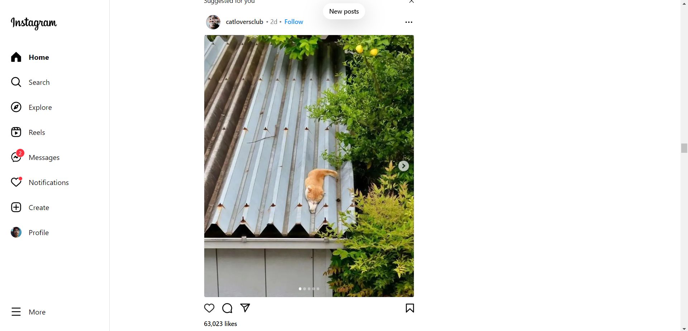

Assignment no.1
Visit a website that interests you. Get a screenshot of the home page or one other pertinent page from the site.
Create a single webpage to place the screenshot images of your chosen website and your answers to the following questions:
Log-in Page:

Content:

- What is the URL of the site?
- https://www.instagram.com/accounts/login/
- What is the purpose of the site?
- In my opinion, sharing photographs and videos was Instagram's primary function when it first launched. Users of the platform can post, edit, and share their media with a specific group or their followers. But as technology advanced over time, so did the apps and websites we used for various purposes, including Instagram. These days, it offers various features, including storytelling, live streaming, and direct messaging. Today, Instagram may be used for many things, such as self-expression, interacting with friends and family, promoting businesses and brands, and sharing interests and hobbies. Instagram has also developed into a crucial marketing platform for brands and influencers to advertise their goods and services.
- Who is the intended audience?
- Based on my research of who is the intended audience of Instagram is? Is the generation of millenial or gen z age ranging from 16 to 24.
- Do you think that the site reaches its intended audience? Why or why not?
- In my opinion, yes, Instagram reaches its intended audience since people nowadays are using it to post decent photos and videos aside from Facebook. Also, aside from TikTok and any other platforms, Instagram has become one of the most crucial marketing platforms for brands and influencers who want to endorse and sell their products and services to people. And also, in my opinion, it is more decent than any other social media platform
- Is the site useful to you? Why or why not?
- Yes, I will say that the Instagram site is useful to me since I have used it before and even up until this day, but not as often anymore because I have my priorities, which help me balance the usage of this site. As we all know, balance in everything that we do is a must and is important, and overusing anything will do nothing but harm.
- Does this site appeal to you? Why or why not? Consider the use of color, images, multimedia, organization, and ease of navigation.
- Yes, the site appeals to me, considering the colors, images, multimedia, organization, and ease of navigation of this site, which are precise and concise. Instagram's website design is well-executed and consistent with the platform's identity and user expectations. It uses white, black, and gray colors to produce a clean and modern style, and it incorporates brilliant colors for user-generated content. The layout is image-heavy, with photographs and videos taking up the majority of the screen area. The navigation menu is at the top of the page, and the material is divided into three sections: home, explore, and profile. Overall, the design is effective in producing an entertaining and user-friendly experience.
- Would you encourage other to visit this site why or why not?
- Yes I will encourage other to visit this website especially those people who enjoys photography, videography, and visual arts. Since Instagram can be a great platform for them to explore and showcase their work. They can also follow people that are align with their interest and discover new content that you can't find elsewhere. However, it also has its downsides, such as cyberbullying, addiction, and privacy concerns. It is important to use the site responsibly and be aware of the potential risks associated with social media use. Lastly, the decision to visit Instagram is up to the individual, and they should weigh the pros and cons before deciding whether or not to use it.
- How could this site improved?
-
Instagram could improve its reporting system, content moderation, algorithmic bias, transparency, user experience, support for creators, and accessibility to make it a safer and more enjoyable experience for all users.